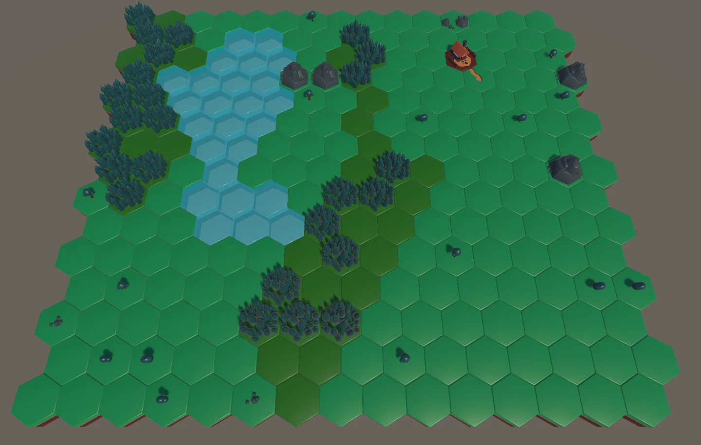
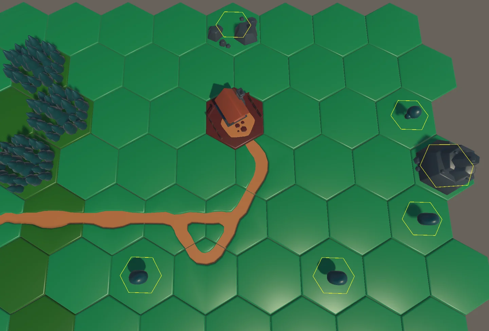
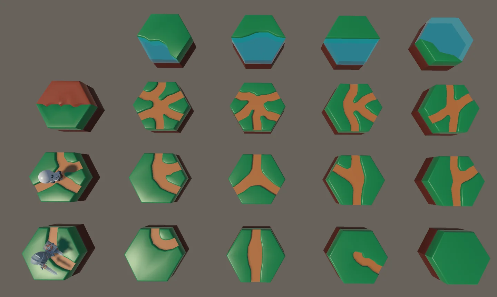
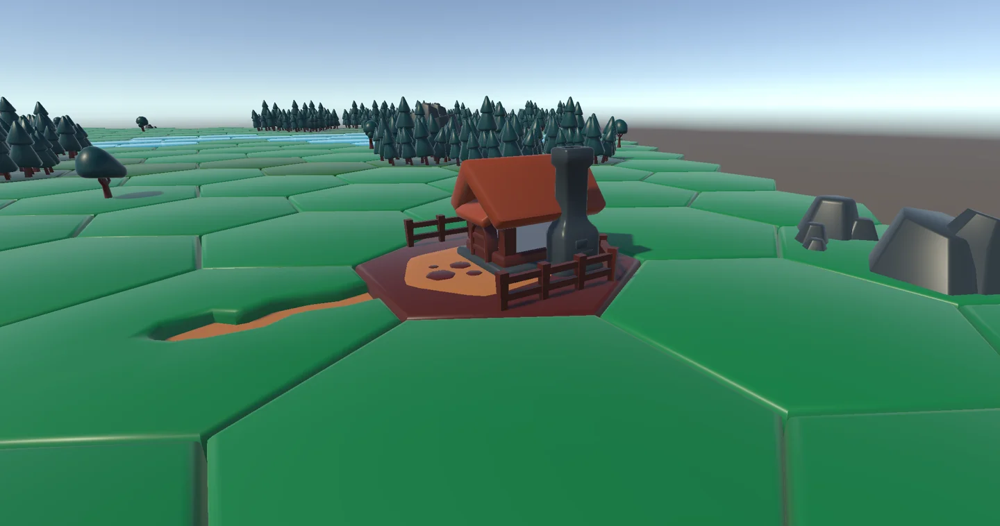
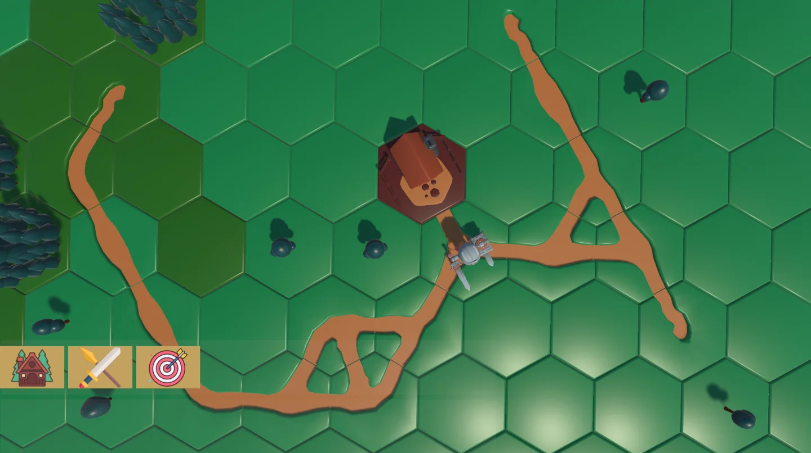

Descripción
Herramienta que permite generar mundos procedurales mediante piezas modulares.
Funcionamiento
Sistema procedural
Desde el editor de Unity es posible establecer probabilidades de que piezas pueden ir juntas. De igual manera, se pueden estableceer zonas (conjunto de piezas) con una serie de estructuras u otros elementos que se pueden encontrar ahí. La forma y el tamaño de las zonas también pueden ser modificados.
Caminos y estructuras
Estos dos elementos se dejaron fuera del sistema para ser colocados manualmente. Solo se pueden colocar estas piezas si la relación estre ambas fué definida en el inspector. Al ponerla, se analizan las piezas de su al rededor para definir si es necesario cambiarla, rotarla o modificarla para obtener un mejor acoplamiento.
Nota
Solo se permite utlizar un número máximo de piezas al mismo tiempo, por esta razón, al moverse sobre el escenario se van tomando nuevas piezas de un "pool" general o se mofican las texturas para poder reutilizarlas.
Imágenes del proyecto
Selecciona una captura para verla en su resolución original.









